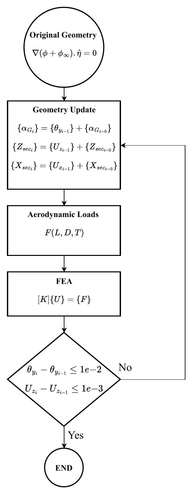
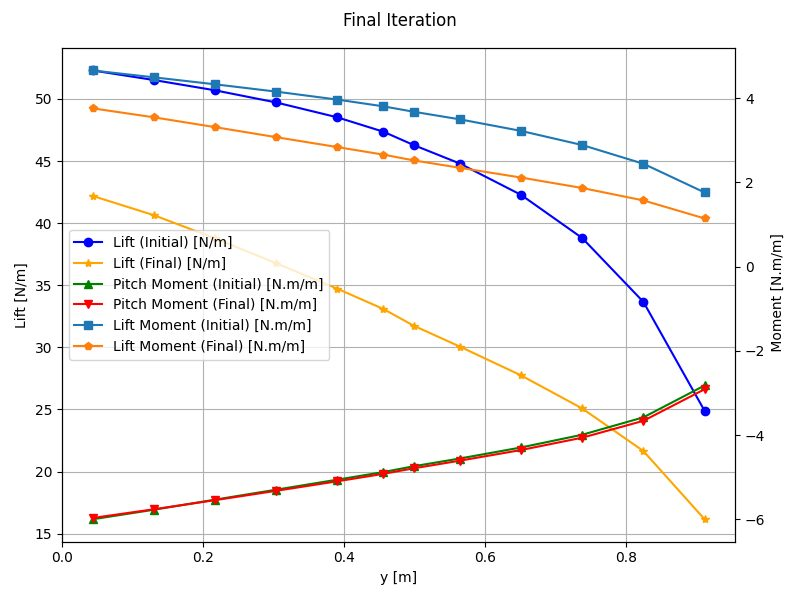
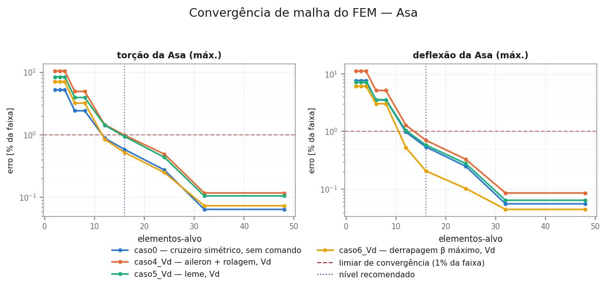

Aerocouple: static aeroelastic analysis for conceptual designAerocouple: aeroelasticidade estática para projeto conceitual
Full CFD and FEA aeroelastic loops are too slow for conceptual design, where hundreds of variants need to be compared. I built from scratch a Python tool that couples a beam finite element solver (12 DOF elements) to the AVL vortex lattice code in a fixed-point loop: aerodynamic loads deform the structure and the deformed geometry updates the aerodynamic model until twist and displacement converge. Mesh convergence studies pick the cheapest mesh for each accuracy target.
- Divergence predicted at 73.25 m/s for a wing cruising at 14.6 m/s
- L/D +2.26% from elastic load redistribution in cruise
- Validated by 20+ automated test modules against closed-form solutions, CAD data and literature
- Published at COBEM 2025
Loops aeroelásticos com CFD e FEA completos são lentos demais para o projeto conceitual, onde centenas de variantes precisam ser comparadas. Construí do zero uma ferramenta em Python que acopla um solver de elementos finitos de viga (elementos de 12 GDL) ao código de vórtices AVL em um loop de ponto fixo: as cargas deformam a estrutura e a geometria deformada atualiza o modelo aerodinâmico até torção e deslocamento convergirem. Estudos de convergência de malha escolhem a malha mais barata para cada precisão.
- Divergência prevista em 73,25 m/s para uma asa com cruzeiro de 14,6 m/s
- L/D +2,26% pela redistribuição elástica de cargas no cruzeiro
- Validada por mais de 20 módulos de testes automatizados contra soluções analíticas, dados de CAD e literatura
- Publicada no COBEM 2025


